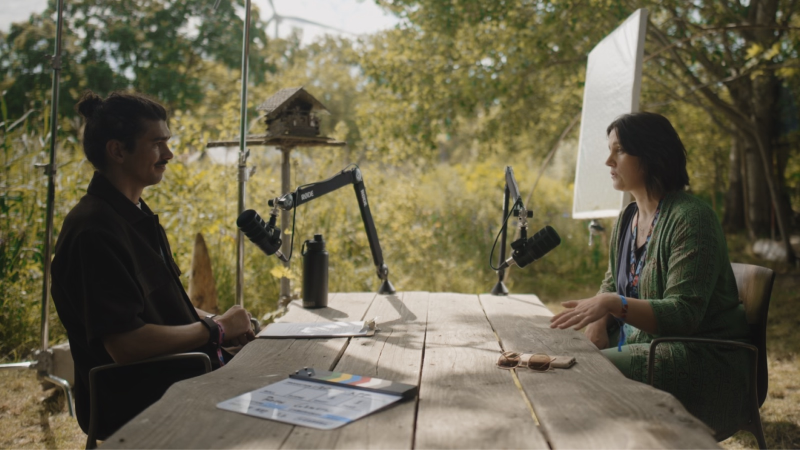

Hi, I'm Kyle!
Deep tech nerd. Interviewer. Video content marketer.
Before learning how to grow audiences on the internet I spent years making videos which no-one watched. Because I thought I was just a "filmmaker". It was only when I started thinking of myself as a marketer that everything started to click. Who would have thought that distribution actually matters?
In 2026 I helped grow Foundation Zero's LinkedIn audience from 1,000 to 4,000 followers, and brought their YouTube subscribers from 0 to 1,250. Because I finally started to focus on finding real stories, and telling them in ways that actually work on the internet.
- 01Content strategy
Understanding the audience you want to reach, the platforms they hang out on, and what stories make them tick.
- 02Interviewing
Most technical founders and engineers aren't natural performers, and supporting them to put their best foot forward on camera has become the most rewarding part of my job.
- 03Filmmaking
I've built up a great team of cinematographers, editors and thumbnail designers to help me do this at a level which suits your budget.
